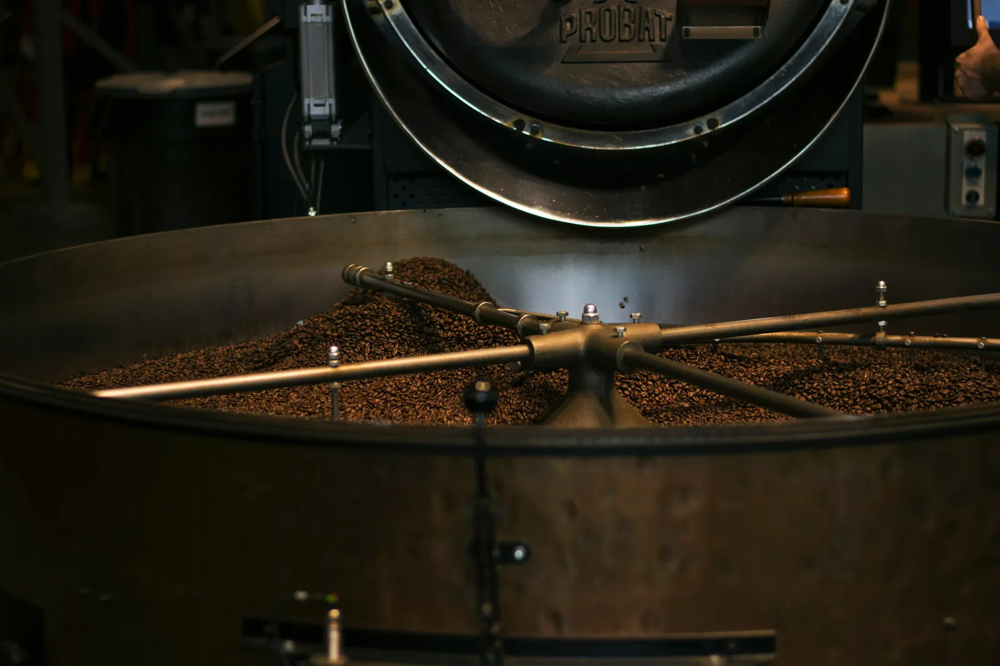

Roasted in the shop
Every batch is roasted on site, so the beans you take home are as fresh as they get.
Micro roastery · Est. 2020
Small-batch specialty coffee, roasted in the shop and served in one of Edinburgh's most charming little streets.
Why Cobbled
Every batch is roasted on site, so the beans you take home are as fresh as they get.
100% Arabica from growers around the world, chosen for quality and fair practices.
A tiny cafe run by two friends with decades of hospitality experience between them.
From the roaster
A single-origin Brazilian coffee, roasted in small batches.
A Colombian single-origin, roasted fresh to order.
A rare Geisha variety from Costa Rica for the curious coffee lover.

Small batch
Beans are roasted in small batches on site, so what lands in your cup or your bag is as fresh as it can be. Ask at the counter and see what's on the roaster today.
How we roastHidden on a cobbled street in Edinburgh's New Town, the shop has a window seat for watching Thistle Street go by, a little roaster at work and a short list of pastries from a local bakery.
Read our storyGallery
Visit us
Mon – Fri: 8:00 – 16:00
Sat: 9:00 – 16:00
Please check before visiting
Cards, contactless and Apple Pay accepted. Beans available to buy in the shop.